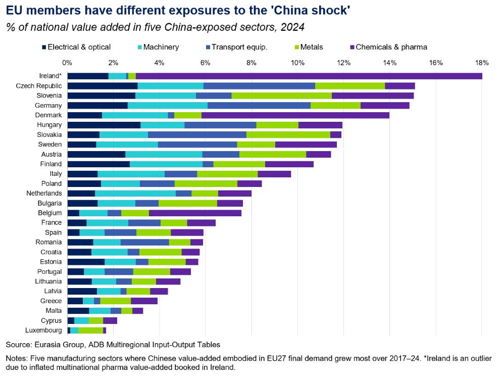
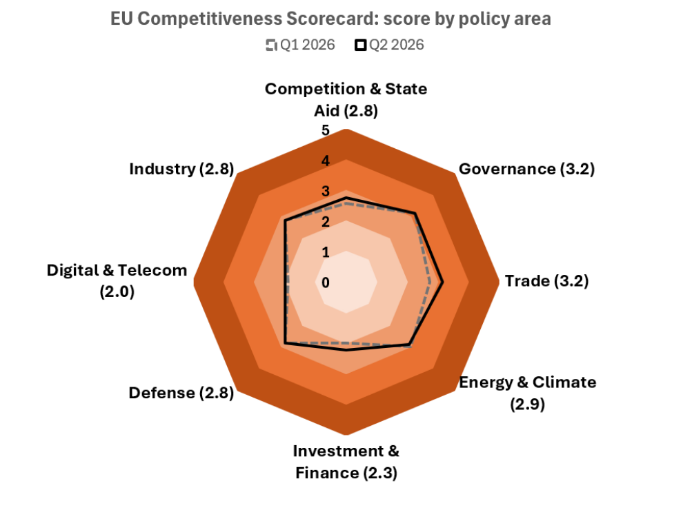
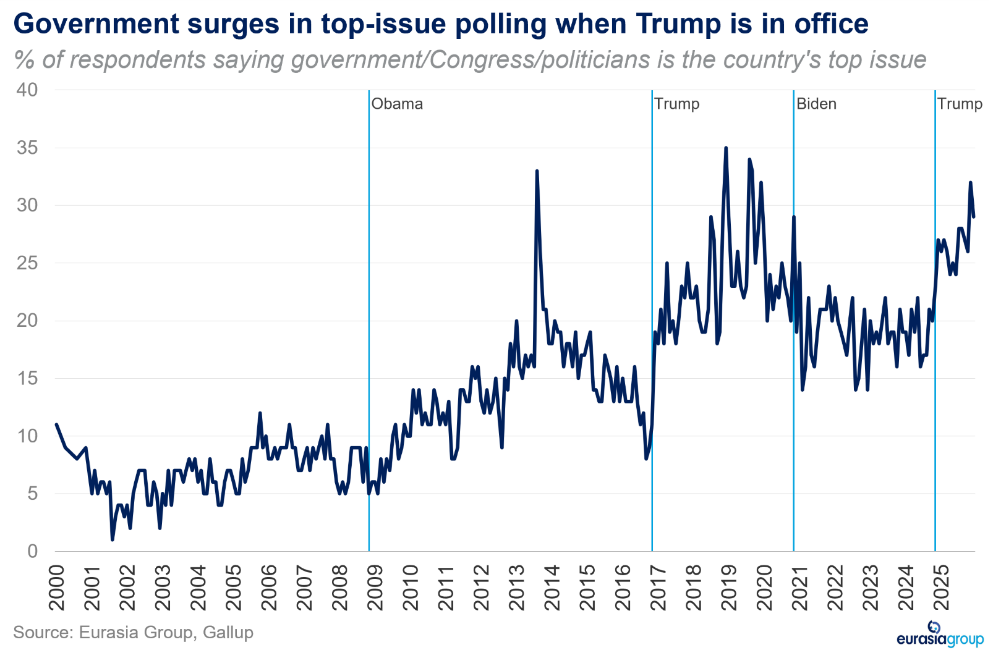

|
06 Jul 2026 08:42 EDT |
||
|
|||
|
|||
summary
|
|||
the top lineIran, MENA Crisis—Iran war & MENA regional update
China, EU—Trade confrontation will escalate despite managed pause

Ian Bremmer on globalization’s discontentsGlobalization is economically efficient and has driven the greatest period of largely uninterrupted growth and human development that we’ve ever seen. And yet, the system is shifting toward greater fragmentation. There are lots of reasons for that:
For more of Ian’s insights on Iran, Latin America, and the Supreme Court, read this week’s EG Update.
Israel—Likely opposition win would diminish threat of Israeli strikes on Iran
Iraq—Iraq gives Trump what he wants on militias and oil, for now
Upcoming conference calls
|
||


eg in depthVenezuela—Conference call notes: Venezuela’s earthquake fallout: The earthquakes are a significant setback for Venezuela's economic recovery, likely weakening President Delcy Rodriguez and slowing US-backed reforms, but not reversing the broader opening or normalization process. Trump’s administration remains committed to political stability under Rodriguez, but social pressures and an eventual Maria Corina Machado return could prompt a recalibration of transition conditions or timing. The disaster may legitimize a more aggressive stance toward creditors in a forthcoming debt restructuring, with a lengthy process that involves the IMF still likely, though the US could use its leverage to force a faster resolution. Read more here. Reach out to discuss: latinamerica@eurasiagroup.net.
EU—Competitiveness scorecard: Q2 update shows a further uptick in the score to the highest level yet, reflecting moderate progress overall. This reflects political alignment across the EU’s major member states (“E6”) on common priorities. Scope for meaningful legislative progress over the next 6-12 months before the 2027 election “super-cycle” closes the window for reform. Read more here. Reach out to discuss: europe@eurasiagroup.net. 
China—Coal-to-chemicals and green molecules poised for more Chinese policy support: In the aftermath of the Iran crisis, two of the clearest beneficiaries of Chinese energy policy support will be coal-to-chemicals and green molecules, including hydrogen, ammonia, and methanol. Beijing will probably draw a central lesson from the Iran crisis: China should accelerate import substitution across the energy system. Read more here. Reach out to discuss: ecr@eurasiagroup.net.
US—Trump's personal earnings will make ethics a top issue for 2028: In a recently-released financial disclosure Trump reported at least $2.2 billion in revenue in 2025, much of it from his family's cryptocurrency venture, World Liberty Financial. The figure will headline Democratic attacks going into the midterms and beyond. The party has already built much of its messaging around corruption in the Trump administration. Read more here. Reach out to discuss: unitedstates@eurasiagroup.net. 
US—Republicans would replace Alito and Thomas quickly if they retire: Though NPR retracted its story last week reporting the retirement of Supreme Court Justice Samuel Alito, there is still a significant possibility Alito or his colleague Clarence Thomas retires this year. Both are well into their 70s, and if Democrats win the Senate this year, this could be Republicans’ last chance to replace the conservatives for years. Read more here. Reach out to discuss: unitedstates@eurasiagroup.net.
South Africa—Anti-migrant protests will remain a prominent issue through November's elections: March and March leaders have framed the 30 June deadline as the start of a sustained pressure campaign, reportedly vowing weekly protests for six months. Opposition parties will also have incentives to keep the issue alive ahead of the November local elections. Read more here. Reach out to discuss: africa@eurasiagroup.net.
D.R. Congo—Fiscal risks will persist despite progress toward IMF milestones: Despite strong mining exports, higher revenue collection, and a successful first Eurobond issuance, fiscal pressures remain elevated. The fallout from the Iran war, the Ebola outbreak, the persistent conflict in eastern DRC, and rising political tensions will likely continue to strain public finances. Read more here. Reach out to discuss: africa@eurasiagroup.net.
Cote d’Ivoire—Low risk of debt distress reclassification will support implementation of development plan: The authorities have strengthened debt sustainability. Cote d’Ivoire moved from a moderate to a low risk of debt distress after the public debt ratio fell for the first time in more than a decade, reaching 57.1% of GDP in 2025. The IMF reclassification makes Cote d’Ivoire the only country in sub-Saharan Africa in the low-risk category. Read more here. Reach out to discuss: africa@eurasiagroup.net.
Indonesia—Prabowo likely to cut spending on flagship free meals program: President Prabowo Subianto will likely approve a proposed additional $2.2 billion cut to his signature free meals program. While the reduction is modest and the full allocation was unlikely to be spent, the move will reinforce signs that Prabowo is trying to keep the budget deficit within the 3%-of-GDP limit. Read more here. Reach out to discuss: southeastasia@eurasiagroup.net.
US, Canada, Mexico—Conference call notes: USMCA update: Analysts discussed the US-Mexico-Canada Agreement (USMCA) review will most likely result in a “zombie” agreement, with bilateral protocols instead of a full trilateral renewal. Mexico remains better positioned than Canada to reach an agreement this year. The negotiations will focus on tightening North American supply chains by raising regional content requirements and restricting Chinese participation, particularly in autos and strategic manufacturing. Trade and security will remain on separate tracks, allowing USMCA talks to advance despite continued bilateral tensions, especially between the US and Mexico. Still, the likelihood of Trump linking the two issues remains an important tail risk. Read more here. Reach out to discuss: unitedstates@eurasiagroup.net.
Upcoming Events:
The EG Daily Brief is compiled by Jens Larsen, Lucy Eve, Babak Minovi, Pietro Guglielmi, Rahul Bhatia, Marilia Sirio, Joseph Craven, Martina Silva, Sol Lopes, and Trista Kelley, with help from Marina Tavares, and Astral Betteridge. |
||
 |
closing quipWho needs Democrats when you have your own party derailing the Trump agenda?”—Rep. Nicole Malliotakis (R-NY), quoted in Politico on 1 July, on the recent turmoil in the House that has in effect seen House Speaker Mike Johnson (R-LA) lose control of the floor. |
||
 |
|||